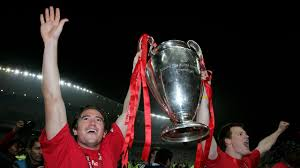

La final se jugó el 25 de mayo de 2005 en el Estadio Atatürk de Estambul, entre el AC Milan y el Liverpool. El marcador fue 3-3, y el Liverpool ganó 3-2 en la tanda de penales.
El Milan iba ganando 3-0 al descanso, pero el Liverpool logró empatar en la segunda mitad con goles de Steven Gerrard, Vladimir Smicer y Xabi Alonso. La victoria en los penales le dio al Liverpool su quinta Copa de Europa.